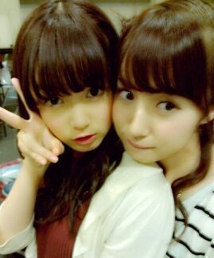
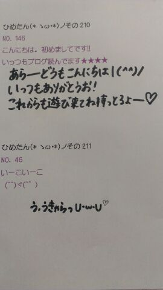

姉妹たん。
前髪の感じがもうーそっくりね
みさみさおねえたまーあああっ＊
∩^ω^∩
昨日は乃木ここ撮影行ってきた＼(^^)／
ロケ。しかも今回は
東京からちょっとはなれたとこ。
オンエアみてねっ！
ひめたん大図鑑とは何か。
それは、ひめたんが受験とかテストとかテストとかテストでちょーっと日記書く時間がないぞーって時に登場する、
いわゆる「過去の質問返しをまとめたもの」って感じかな。
過去なので時制とかおかしなことになる質問も中にはあるかもだけど、
ま、そゆことなんでね(*^^*)
555
 ひめたんは広島出身って事でやっぱり野球は広島カープのファンですか？
ひめたんは広島出身って事でやっぱり野球は広島カープのファンですか？ってかプロ野球は好きですか？(笑)
野球...。
ごめんなさい普段はあんまり見ないですっ
でも球団の中では一番カープに愛着わくし、応援したくなります(^^)♪
赤ヘルじゃんっ!
556
明日１６日、二十歳の誕生日なんだひめたんに１０代最後だから祝って欲しいなはたち!おめでとうございます∪・ω・∪
お誕生日てのは年に1度しかないですもんね♪
ステキな日になりますように(∀)/
有意義な1日になること、ひめたんも祈っておりますー♪♪
557
今日入試が終わったんですけど、まだもう一回あるので、なんか応援メッセージ??的なのください（笑っ）とりあえずお疲れ様でした(^^)!
ひめたんのお友達も同じ感じのメールをくれたので、みんなにエール送りましたよ♪
日本中の受験生のみなさまー!
最後まで精一杯全力で!リラックスして!応援してます(ω)
558
男同士のチョコ渡しってどう思う？アリ(・∀・)!!!
だってばれんたいんだものっ。
559
フィレオフィッシュが安い時は2個も3個も買っちゃうよ！ひめたんはそういう好きな食べ物って何かあるかな？
えー何だろう。お菓子はいっぱい買いたくなりますよねっ
て。今は我慢してるんだから、この話はやめてー(>_<)!
560
友達と外食のときは何を食べること多い？マックかファミレス。
ざ★中学生!
561
ひめたんは無意識で東京弁を話せるようになったのかな？ひめたん何を話す時も無意識ですよっ
でも、この前メンバーに「最近めっちゃ標準語じゃないー？」て言ったら
「どこがやー!」ってなった(*^^*)
562
広島のお好み焼きで一番好きな具は何ですか？「お好み焼きの具」て答えにふさわしいかはわからんけど
チーズ入れたらやーばい美味しいよ(*^^*)/
キャベツはもちろんたっぷり多め、オタフクソースもたっぷり多めね♪
563
ひめたんって料理できるの？ひとりではできないに等しい(*'・ω・`)
564
カルピス、オレンジジュース、リンゴジュース、ピーチジュース??、牛乳の中でどれが一番好きですか？
やっぱりんごじゅーす★!
565
「ゆず」の唄う「桜木町」は知ってるかな?へーえ初めて聞いたです!
よしっ忘れんうちに聞いてみるしかー(*^^*)
566
遠州弁(←静岡の方言)って知ってる？よく、まいまいが言ってるヤツだよ〜（笑
「〜だに？」←これですね？
同じ静岡出身でもみゅみゅはあんま言わない!
静岡って広いんですねー♪
567
ひめたんは勉強や遊びで徹夜つまりオールする！？朝と夜どっちが強い！？
受験生の時はわりとオールしてお勉強してましたよ(`・・)/
朝は弱い。何なら起きて勉強してる方がってなる人かな!
568
コスモクロック21の中心の時計は見えましたか?あー駅からは見えんかった(*'・・`)
けど、前にままと近くに行ったとかに見ましたよ♪
見るだけでも楽しいですよねーっ
でも乗ったらなお楽しい!
569
「ω」ってなんて読むかわかる？へ？
ω←読み方なんかあるんですか？
教えて下さいー気になる!
570
グリーンジャンボ宝くじ最高５億だけど、ひめたん、当たっら、周りにしゃべる派？かくす派かな？必要以上にしゃべると思う。
ああー怖い怖い(д)
大丈夫。ひめたん乃木坂のオーディションと受験で
運をすべて使い果たしちゃったから...。
571
ひめたんも自分でＣＤ買っちゃうのかな？そりゃもちろん買うしかー(・∀・)!!!
572
ひめたんは自分を動物にたとえるとなに？はむすたー(ω)
はむすたーに似てるってかわごさん（川後陽菜chan）やほかのメンバーに言われてから
はむすたーにも愛着が沸くの最近♪♪
573
「いい歳して...」って笑われたけど、感動する心に年齢関係ないもんね。どう思いますか？
感動するのに年齢なんて関係ないー(o>ω<o)!
いろんなことに感動する心を持ってる人、ステキだと思います♪♪
574
ダンスが好きってことは、運動は得意なの？いやいやそれが全然で...。
よく言われるけど、ダンスと運動神経て結び付かないですよ？
ひめたん陸上・水泳等々めっちゃ下手ですもんっ
強いていうなら球技がちょっとできるかなー？

(＊´・ω・＊)ひめたん
 HEY×３ひめたん出る？？
HEY×３ひめたん出る？？ ひめたんはカラオケ中店員さんが入ってきても気にしないで歌い続けますか？？
ひめたんはカラオケ中店員さんが入ってきても気にしないで歌い続けますか？？